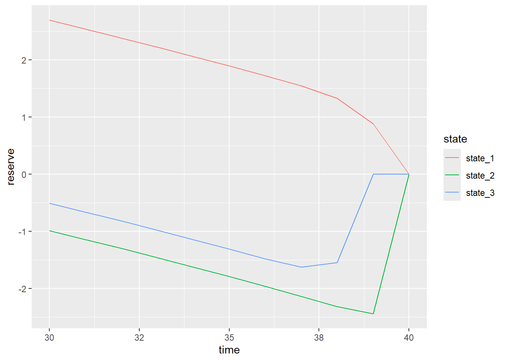
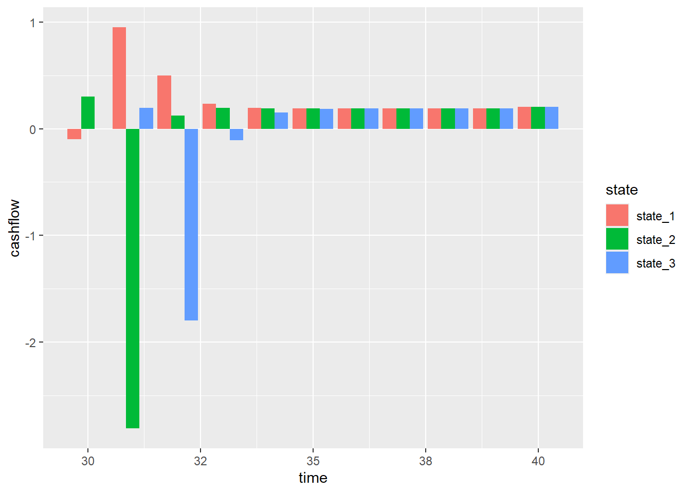
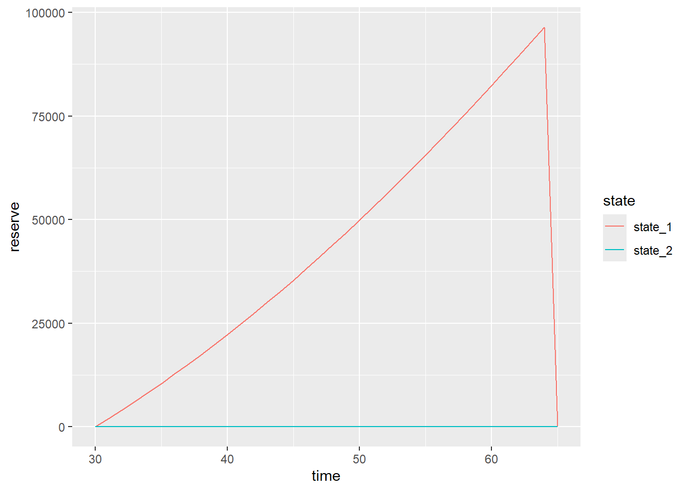
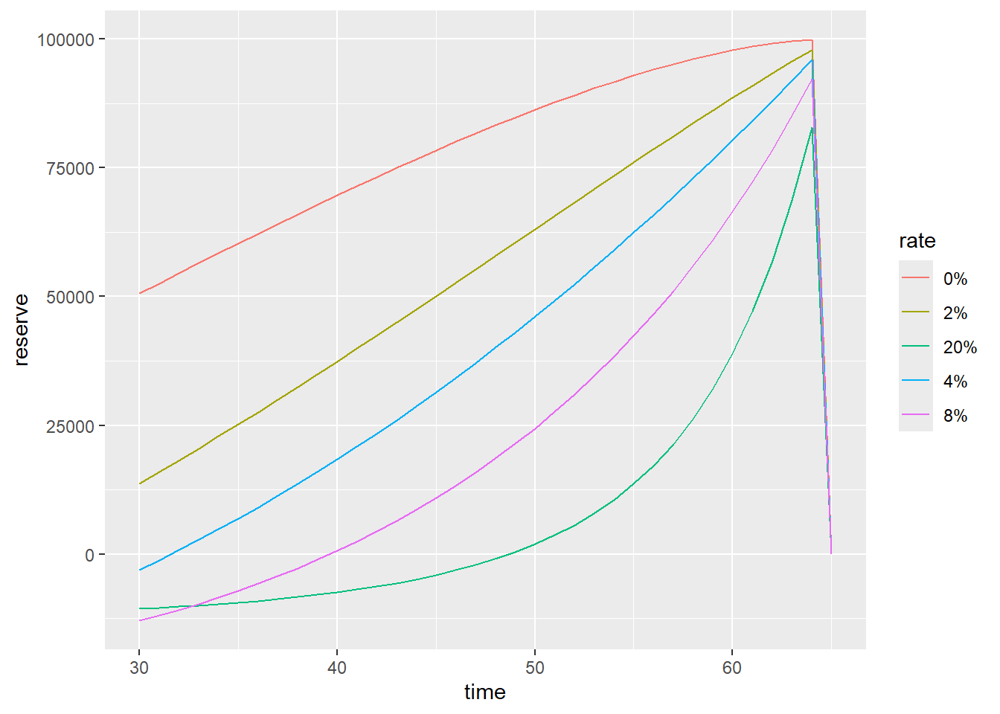
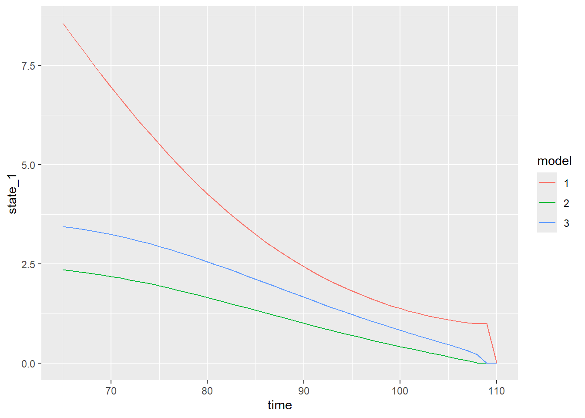
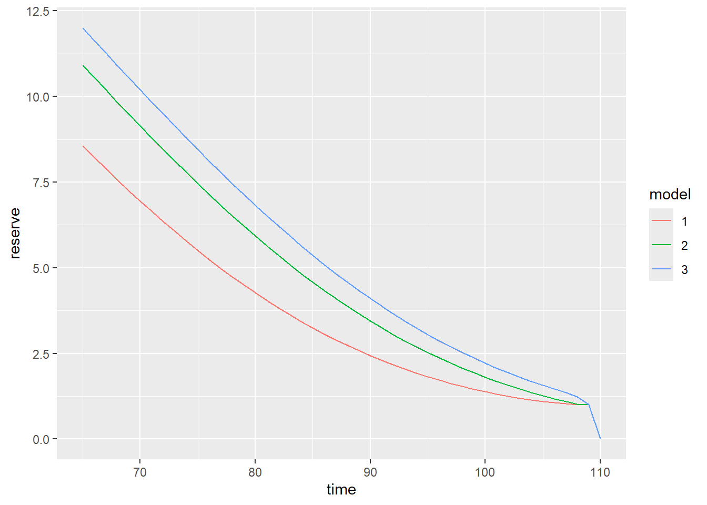
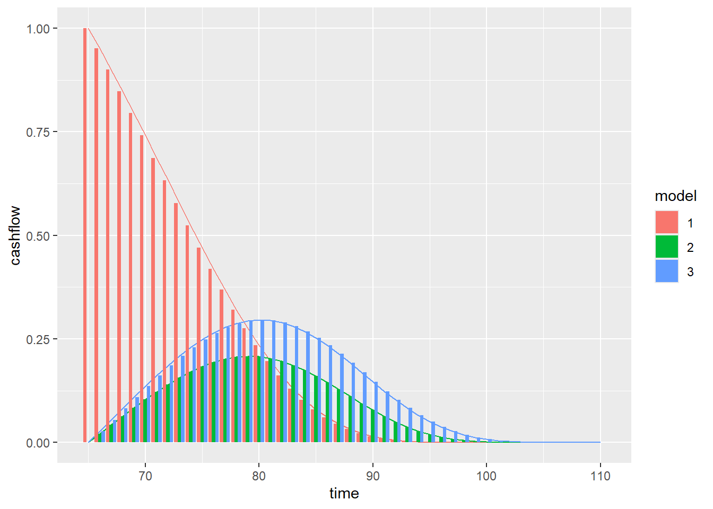
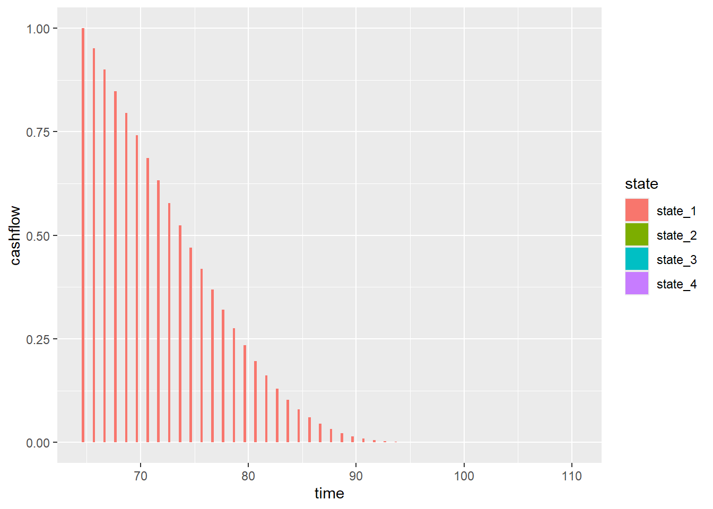
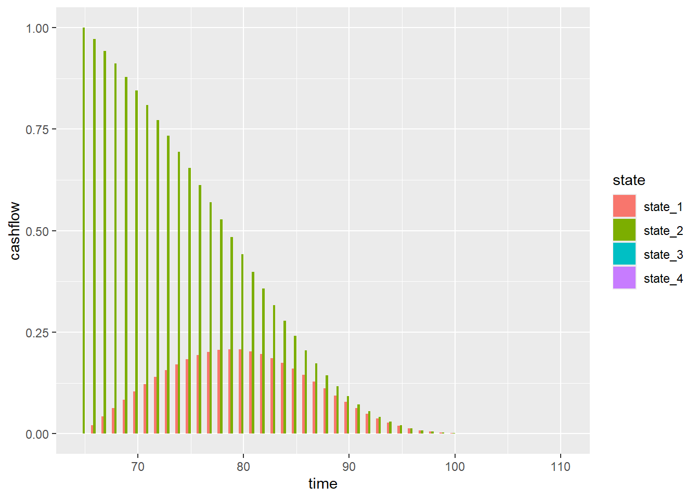
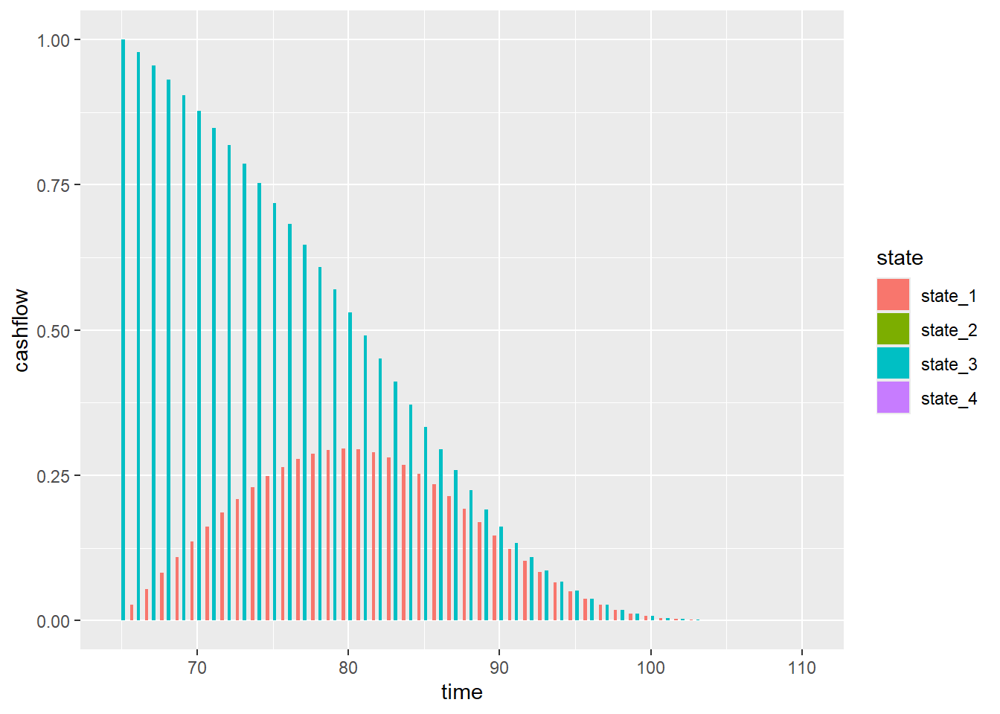

library(markovlv)
library(ggplot2)Warning: package 'ggplot2' was built under R version 4.3.3options(scipen = 999, digits = 2)library(markovlv)
library(ggplot2)Warning: package 'ggplot2' was built under R version 4.3.3options(scipen = 999, digits = 2)We define the model
m <- Markov1$new(n_states = 3)
m$set_discount_factor(0.02)[1] "Discount factor: 0.9804"start <- 40
stop <- 30
p <- matrix(
c(
0.80, 0.10, 0.10,
0.70, 0.20, 0.10,
0.15, 0.70, 0.15
),
ncol = 3, byrow = TRUE
)
m$set_transition_matrix(p)
pre <- c(-0.10, 0.30, 0.00)
m$set_prenumerando(pre)
post <- matrix(
c(
0, 0, 10,
-4, 0, 0,
0, 0, 0
),
ncol = 3,
byrow = TRUE
)
m$set_postnumerando(post)Model outputs
m$get_reserve(start, stop) time state_1 state_2 state_3
1 30 2.70 -0.99 -0.51
2 31 2.54 -1.14 -0.66
3 32 2.39 -1.30 -0.82
4 33 2.23 -1.46 -0.98
5 34 2.06 -1.62 -1.14
6 35 1.89 -1.79 -1.31
7 36 1.72 -1.96 -1.48
8 37 1.55 -2.14 -1.62
9 38 1.33 -2.32 -1.55
10 39 0.88 -2.45 0.00
11 40 0.00 0.00 0.00m$plot_reserve(start, stop)
m$plot_cashflow(start, stop)
A more complex example with a parameterised mortality function
mu <- function(x) exp(-9.13275 + 0.0809 * x + 0.000011 * x^2)We use this function to define a more complex Markov model
m <- Markov1$new(2)
m$set_discount_factor(0.035)[1] "Discount factor: 0.9662"mp <- m$clone()
start <- 65
stop <- 30
p <- array(0, dim = c(2, 2, 120))
p[1, 2, stop:(start - 1)] <- mu(stop:(start - 1)) # Python starts indexing from 0
p[1, 1, stop:(start - 1)] <- 1 - p[1, 2, stop:(start - 1)]
p[2, 2, stop:(start - 1)] <- 1
m$set_transition_matrix(p)
mp$set_transition_matrix(p)
post_m <- array(0, dim = c(2, 2, 120))
post_m[, , stop:(start - 1)] <- matrix(
c(0, 200000,
0, 0),
ncol = 2,
byrow = TRUE
)
post_m[1, 1, (start - 1)] <- 100000
m$set_postnumerando(post_m)
m$set_prenumerando(c(0, 0))
post_mp <- matrix(
c(0, 0,
0, 0),
ncol = 2,
byrow = TRUE
)
mp$set_postnumerando(post_mp)
mp$set_prenumerando(c(1, 0))
pp <- m$get_reserve(start, stop)$state_1[1] /
mp$get_reserve(start, stop)$state_1[1]The premium is 2157
modified_prenumerando <- m$prenumerando
modified_prenumerando[stop:(start - 1), 1] <- -pp
m$set_prenumerando(modified_prenumerando)
m$get_reserve(start, stop) time state_1 state_2
1 30 0.000000000015 0
2 31 1987.741987548587 0
3 32 4026.988440346793 0
4 33 6118.308532722254 0
5 34 8262.219143979533 0
6 35 10459.180255775540 0
7 36 12709.590273622582 0
8 37 15013.781303810341 0
9 38 17372.014422746364 0
10 39 19784.474982083560 0
11 40 22251.268000102165 0
12 41 24772.413697723085 0
13 42 27347.843246344426 0
14 43 29977.394804526652 0
15 44 32660.809931541633 0
16 45 35397.730478115715 0
17 46 38187.696068545854 0
18 47 41030.142304013025 0
19 48 43924.399834689611 0
20 49 46869.694468557384 0
21 50 49865.148508258069 0
22 51 52909.783534477872 0
23 52 56002.524886209831 0
24 53 59142.208125890669 0
25 54 62327.587822359012 0
26 55 65557.349038762273 0
27 56 68830.121978467418 0
28 57 72144.500322995227 0
29 58 75499.063896309104 0
30 59 78892.406415112069 0
31 60 82323.169242615491 0
32 61 85790.082263438439 0
33 62 89292.013253044250 0
34 63 92828.027444020423 0
35 64 96397.459417195976 0
36 65 0.000000000000 0m$plot_reserve(start, stop)
Impact of different interest rates
my_interest_rates <- c(0.00, 0.02, 0.04, 0.08, 0.20)
reserves <- vector("list", length = length(my_interest_rates))
for (i in seq_along(my_interest_rates)) {
rate <- my_interest_rates[i]
m$set_discount_factor(rate)
print(
paste(
"Interest rate", 100 * rate, "-->",
format(m$get_reserve(start, stop)$state_1[1], nsmall = 2, digits = 2)
)
)
reserves[[i]] <- cbind(
setNames(m$get_reserve(start, stop)[, c("time", "state_1")], c("time", "reserve")),
rate = paste0(format(rate * 100, format = "2.f%"), "%")
)
}[1] "Discount factor: 1.0000"
[1] "Interest rate 0 --> 50616.25"
[1] "Discount factor: 0.9804"
[1] "Interest rate 2 --> 13713.16"
[1] "Discount factor: 0.9615"
[1] "Interest rate 4 --> -2997.77"
[1] "Discount factor: 0.9259"
[1] "Interest rate 8 --> -12924.98"
[1] "Discount factor: 0.8333"
[1] "Interest rate 20 --> -10615.96"data_plot <- do.call(rbind, reserves)
ggplot(data_plot) +
geom_line(aes(x = time, y = reserve, colour = rate))
Assume the policy has been written in 1955 and the regulator requires you today, in 2022, to set a reserving interest rate of 1%. What are the additional funds required?
original <- 0.035
required <- 0.010
age <- 2020 - 1995 + 1Current age 26
m$set_discount_factor(original)[1] "Discount factor: 0.9662"vx_original <- m$get_reserve(start, stop)$state_1[age]
m$set_discount_factor(required)[1] "Discount factor: 0.9901"vx_required <- m$get_reserve(start, stop)$state_1[age]Reserves: Original 65557.35, required (current) 84028.05, add reserve 18470.7
start <- 110
stop <- 65
d_xy <- 3
n_states <- 4
discount_rate <- 0.035
m1 <- Markov1$new(n_states)
m1$set_discount_factor(discount_rate)[1] "Discount factor: 0.9662"m2 <- Markov1$new(n_states)
m2$set_discount_factor(discount_rate)[1] "Discount factor: 0.9662"m3 <- Markov1$new(n_states)
m3$set_discount_factor(discount_rate)[1] "Discount factor: 0.9662"m1$set_prenumerando(c(1, 0, 0, 0))
m2$set_prenumerando(c(0, 1, 0, 0))
m3$set_prenumerando(c(0, 0, 1, 0))
policy_duration <- stop:(start - 1)
qx <- mu(policy_duration)
qy <- mu(policy_duration + d_xy)
p <- array(0, dim = c(n_states, n_states, 120))
p[1, 1, policy_duration] <- (1 - qx) * (1 - qy)
p[1, 2, policy_duration] <- qx * (1 - qy)
p[1, 3, policy_duration] <- (1 - qx) * qy
p[1, 4, policy_duration] <- qx * qy
p[2, 2, policy_duration] <- (1 - qy)
p[2, 4, policy_duration] <- qy
p[3, 3, policy_duration] <- (1 - qx)
p[3, 4, policy_duration] <- qx
p[4, 4, policy_duration] <- 1
m1$set_transition_matrix(p)
m2$set_transition_matrix(p)
m3$set_transition_matrix(p)
post <- matrix(0, nrow = n_states, ncol = n_states)
m1$set_postnumerando(post)
m2$set_postnumerando(post)
m3$set_postnumerando(post)reserve_state_1 <- rbind(
cbind(m1$get_reserve(start, stop)[, c("time", "state_1")], model = "1"),
cbind(m2$get_reserve(start, stop)[, c("time", "state_1")], model = "2"),
cbind(m3$get_reserve(start, stop)[, c("time", "state_1")], model = "3")
)
ggplot(reserve_state_1) +
geom_line(aes(x = time, y = state_1, colour = model))
names <- c("time", "reserve")
reserve_state_j <- rbind(
cbind(setNames(m1$get_reserve(start, stop)[, c("time", "state_1")], names), model = "1"),
cbind(setNames(m2$get_reserve(start, stop)[, c("time", "state_2")], names), model = "2"),
cbind(setNames(m3$get_reserve(start, stop)[, c("time", "state_3")], names), model = "3")
)
ggplot(reserve_state_j) +
geom_line(aes(x = time, y = reserve, colour = model))
names <- c("time", "cashflow")
cashflow_state_1 <- rbind(
cbind(setNames(m1$get_cashflow(start, stop)[, c("time", "state_1")], names), model = "1"),
cbind(setNames(m2$get_cashflow(start, stop)[, c("time", "state_1")], names), model = "2"),
cbind(setNames(m3$get_cashflow(start, stop)[, c("time", "state_1")], names), model = "3")
)
ggplot(cashflow_state_1) +
geom_line(aes(x = time, y = cashflow, colour = model)) +
geom_col(aes(x = time, y = cashflow, fill = model), position = "dodge")
m1$plot_cashflow(start, stop)
m2$plot_cashflow(start, stop)
m3$plot_cashflow(start, stop)